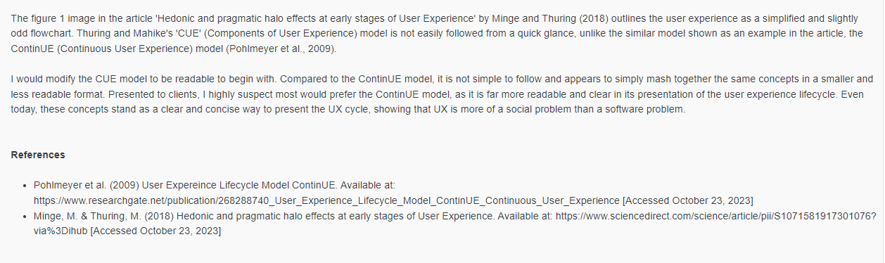
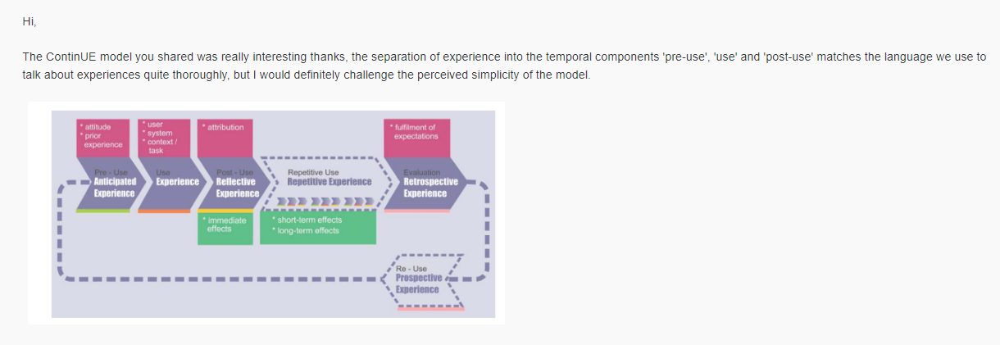
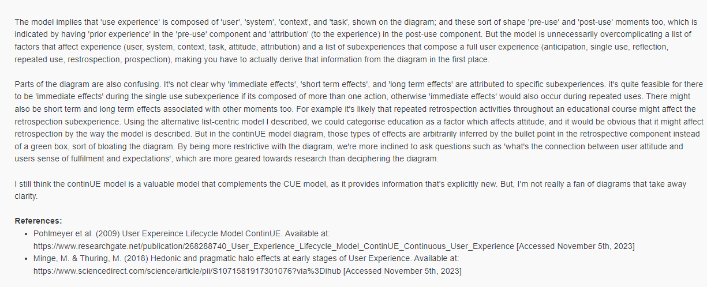

Week 7
Reading
This week, a reading that stood out to me was titled 'Ethical Software: Integrating Code of Ethics into Software Development Life Cycle' (Karim et al., 2017). I enjoyed it because of the responsiliblity of ethics it placed upon project managers, and it's attempt to integrate a code of ethics into a software development lifecycle. I found the piecewise approach of matching ethical statements with specific SDLC phases, simple but useful, and I would be interested in further formalising this integration strategy.
I also found the designation of responsibility interesting too and wondered what incentives a business might have to conform to ethical guidelines beyond enforced compliance. A contemporary goal of ethics is to provide the means to justify an ethical code is beneficial, so we know we are integrating correct motives into a development lifecycle. There seems to multiple perspectives here for example; the Agile manifesto has gained popularity by prioritising business-relations and therefore the business, but an ethical code might be considered too altruistic because it favours non-business relations too. I completely agree that we have ethical responsibility though and it's definitely I bring to a project if I was managing it.
Class Discussion
Continuing the class discussion from last, this is reply I sent to my classmates own post:
Student's Post
My Reply
 Groupwork
This week we gathered our next assignments requirements.